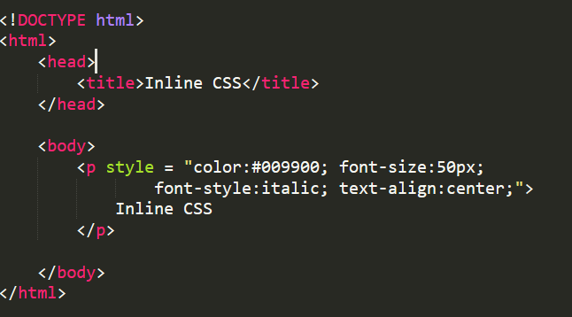
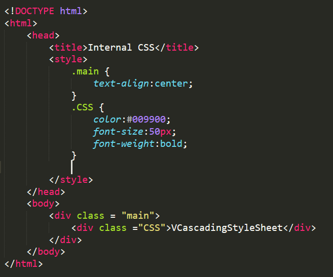
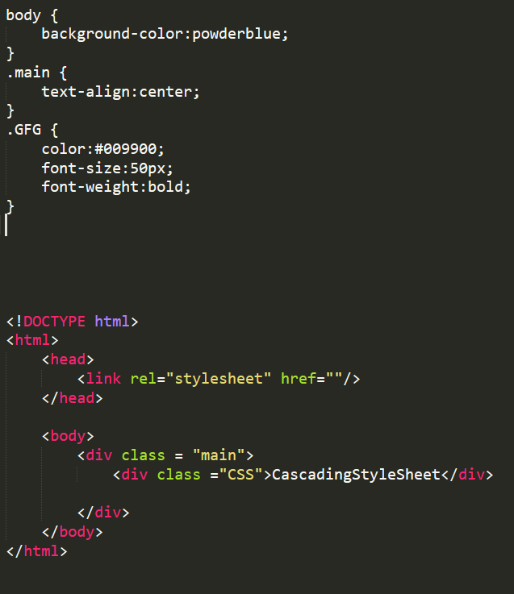

CSS
CSS was developed by Hakon Wium, Bert Bos, World Wide Web 17 December 1996. It is a language used to describes how HTML elements are to be displayed on a web page or layout of HTML documents like fonts, color, margin, padding, Height, Width, Background images, etc. CSS stands for Cascading Style Sheet, here Cascading refers to Section in which we apply Style procedure, and Style refers to color, Margin, font for table paragraphs, and Heading, etc. Sheet refers to how web pages look. In CSS we can change the look and layout of webpages by editing a single CSS file.
Types of CSS
- Inline CSS
- Internal CSS
- External CSS
 CSS
Types
CSS
Types
Types Of CSS
Inline CSS
Inline CSS: Inline CSS contains the CSS property in the body section attached with element is known as inline CSS. This kind of style is specified within an HTML tag using the style attribute.
Internal CSS
Internal or Embedded CSS: This can be used when a single HTML document must be styled uniquely. The CSS rule set should be within the HTML file in the head section i.e the CSS is embedded within the HTML file.
External CSS
External CSS: External CSS contains separate CSS file which contains only style property with the help of tag attributes (For example class, id, heading, … etc). CSS property written in a separate file with .css extension and should be linked to the HTML document using link tag. This means that for each element, style can be set only once and that will be applied across web pages.
BOOTSTRAP
Bootstrap is the most popular open-source front-end framework. It is developed by Mark Otto, Jacob Thornton 19 August 2011. Bootstrap is a collection of CSS classes and JavaScript function and it is used for responsive design and building responsive, mobile-first site and application. It generally works on a grid system for creating page layout with the help of rows and columns and it supports all browsers for creating responsive websites.
Difference between CSS and Bootstrap:
| Cascading Style Sheet(CSS) | Bootstrap |
|---|---|
| CSS is developed by Hakon Wium Lie, Bert Bos, World Wide Web 17 December 1996. | Bootstrap is developed by Mark Otto, Jacob Thornton 19 August 2011. |
| CSS represent the style and the appearance of content like font, color, margin, padding, etc. | Bootstrap is a free and open-source CSS Framework that is used for developing responsive website. |
| CSS does not have a grid system. | Bootstrap is based on-grid system. |
| It currently working on CSS3 which is the latest version of CSS. | Bootstrap currently working on Bootstrap 4 which is the latest version of Bootstrap. |
| CSS does not provide responsive pages or website. | In Bootstrap we can design a responsive website or webpages. |
| CSS is more complex than Bootstrap because there is no pre-defined class and design. | Bootstrap is easy to understand and it has much pre-design class. |
| In CSS, we have to write code from scratch. | In Bootstrap, we can add pre-defined class into the code without writing code. |